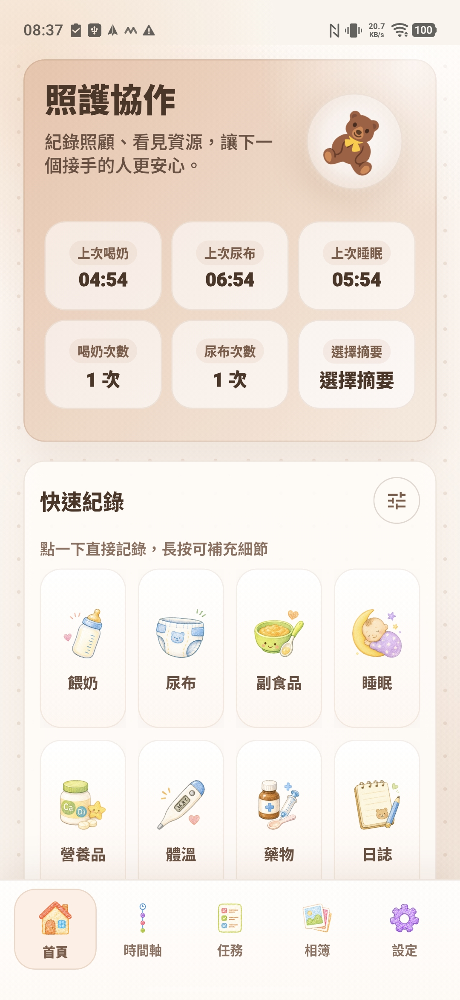

給爸媽與家人的寶寶照顧交接 App
照顧寶寶的每一天，
也有人照顧
你的辛苦。
那些餵奶、換尿布、哄睡的日常，不用再靠一個人記住。讓嚮家陪你們記錄、分擔，把多一點心力，留給寶寶，也留給彼此。
一點一滴的小事，都是一起成為家的練習。
關於我為什麼設計嚮家
讓想幫忙的心，
慢慢變成懂得分擔的默契。
設計嚮家時，我最初想到的是這樣的家庭日常：媽媽陪著寶寶度過一天，慢慢熟悉每個照顧細節；爸爸白天上班，下班後也想一起分擔，卻還來不及跟上這些日常。
對媽媽來說，已經很熟悉的事情，爸爸可能還需要再三詢問。媽媽累了，還得一次次解釋；爸爸想幫忙，卻可能因為不熟悉，越做越慌。原本都是為了寶寶好的兩個人，就這樣多了一些不必要的摩擦。
我希望嚮家能幫忙接住這段落差。透過照顧紀錄，讓接手的人更快了解寶寶的日常；透過任務，讓兩個人有機會提前把期待說清楚：「我希望你能幫忙做什麼？怎麼做，會讓我更安心？」
再一起約定彼此都喜歡、也能接受的獎勵，為每一次努力留下一點鼓勵。從完成一件小事開始，慢慢熟悉、慢慢理解，也慢慢找到適合自己家庭的分工。
如果有一天，你們已經很有默契，不再需要任務與獎勵功能，我也會很開心。
因為我希望留下來的，是兩個人更懂得一起照顧寶寶，也一起照顧彼此。
把日常接住
少一點反覆確認，多一點安心接手。
從半夜的一餐奶，到下班後的一次交接，讓照顧的事情清楚一些，彼此的心就輕一些。
照顧時間軸
餵奶、睡眠、尿布與照顧備註，整理在時間軸裡。不必在疲累的時候，努力回想每一個時間。
家人交接
家人配對後，一起查看照顧紀錄。爸爸下班接手、阿公阿嬤幫忙時，也有清楚的線索可以跟上。
任務與獎勵
一起約定照顧任務與彼此都接受的獎勵，讓分擔有方向，也讓努力得到鼓勵。
示範情境：先約好「今晚換我洗奶瓶」，再一起訂下獎勵，例如一杯喜歡的飲料。任務、點數與獎勵，依你們的共識調整。
看看任務與獎勵的實際畫面

Android 版嚮家首頁 · 示範資料
手腕上的小幫手
雙手正忙著，
也能輕輕說聲：
「我需要你。」
抱著寶寶、換尿布，或正忙著哄睡時，有時只是需要另一雙手，卻騰不出空找手機。
在 Apple Watch 的嚮家點一下「需要支援」，就能送出支援請求，通知已配對的另一位照顧者。讓「我想請你幫忙」有個簡單的出口，也讓家人更容易知道，什麼時候該一起接手。
先把彼此連結起來
在 iPhone 完成家庭配對，並在 Apple Watch 安裝、開啟嚮家。
需要時，在手腕點一下
點選「需要支援」，從手錶送出呼叫。
讓另一位照顧者知道
對方可在手機收到支援通知，開啟嚮家查看請求。
需搭配 iPhone 與 Apple Watch 上的嚮家，先在 iPhone 完成家庭配對並開啟嚮家，讓手錶取得設定；使用時須有可用網路，接收方須允許通知。通知呈現與送達時間會受網路及系統通知設定影響。
安心，從選擇開始
先在自己的手機記錄，準備好了，再一起分享。
不急著登入，也不急著連結。照顧的節奏，由你們決定。
一個人，也能開始
免登入就能使用本機核心功能。尚未配對時，照顧紀錄先保存在自己的手機。
需要一起照顧時，再配對
透過 QR 碼或邀請碼，依 App 指示登入並完成家庭配對，才啟用家庭同步。單純登入不會自動開啟同步。
珍惜的記錄，也記得備份
可以手動匯出 ZIP 備份，另外保存。家庭同步、ZIP 備份和自行存到雲端硬碟，是三件不同的事；請妥善保管備份檔。
從今天，一起開始
讓照顧，多一雙手。
無論你是第一次當爸媽，還是正陪著家人一起照顧，歡迎把嚮家帶進你們的日常。
iPhone・iPad
在 App Store
找到嚮家
用 iPhone 相機掃描 QR 碼，或直接點擊按鈕，前往台灣商店。
前往 App Store 下載 ↗
需要 iOS／iPadOS 15.0 或以上版本。免費下載，提供 App 內購買。
儲存 QR 碼 ↓
Android・封閉測試
邀請你，一起讓嚮家更貼近日常。
Android 目前採 Google Play 封閉測試。先加入測試群組，再成為測試人員，就能依資格從 Play 商店取得 App。
一步一步加入測試
不需要購買即可參與。加入測試群組不會把你加入任何 App 家庭。
Android 加入測試
不用趕，
我們一步一步來。
請在 Android 手機上操作，並在以下每一步使用與 Play 商店相同的 Google 帳號。
加入群組↓成為測試人員↓從 Play 商店安裝
三個步驟都要完成。只有加群，還不算加入 Play 測試。
-
01
先確認手機的 Google 帳號
開啟手機的 Google Play 商店，點右上角個人頭像，確認目前使用的帳號。接下來開啟群組與測試加入頁時，都選擇這個帳號；若有多個帳號，請先切換一致。
-
02
加入「嚮家 Android 測試群組」
點下方按鈕，登入剛才確認的 Google 帳號。在 Google 網路論壇按「加入群組」，依頁面提示完成。若收到的是邀請，請先接受邀請，確認已成為成員再往下。
開啟測試群組 ↗英文按鈕對照：Join group ＝ 加入群組。已經是成員的人，可以直接繼續下一步。
-
03
在 Play 頁面「成為測試人員」
加群後，用同一個 Google 帳號開啟下方測試加入頁，按「成為測試人員」。看到「你已成為測試人員」的確認訊息，才算完成 Play 測試加入。
開啟 Play 測試加入頁 ↗英文按鈕對照：Become a tester ＝ 成為測試人員；You are a tester ＝ 你已成為測試人員。如果以前參加過嚮家「內部測試」，請先從原內部測試退出，再加入這次的封閉測試。
-
04
從 Google Play 下載或更新
在剛才的確認頁，點「在 Google Play 下載」，或點下方商店按鈕。確認是嚮家，再按「安裝」；若已安裝並有新版，按「更新」即可。
前往 Google Play 安裝 ↗英文對照：Download it on Google Play ＝ 在 Google Play 下載；Install ＝ 安裝；Update ＝ 更新。封閉測試不一定能直接搜尋找到，請使用上面的連結；不用另外下載 APK。
-
05
打開嚮家，先從一筆記錄開始
安裝後，點「開啟」或手機桌面的嚮家圖示，依 App 畫面完成初始設定。免登入就能先試用本機核心功能；測試時建議先用虛構寶寶資料與不含私人資訊的照片。
想和家人一起體驗同步，再依 App 內的 QR 碼或邀請碼流程配對。Google 測試群組與 App 裡的家庭，是分開的。
-
06
讓我們知道，哪裡還可以更好
如果願意幫忙，請保留封閉測試資格，持續參與至少 14 天，並在方便的時候實際使用、分享感受。不需要每天固定使用幾分鐘，也不需要購買任何項目。
遇到問題時，請附上 App 版本、手機型號、Android 版本、操作步驟與實際畫面；截圖請先遮住私人資訊。
回報問題或分享使用感受回報表單需要 Google 登入；不想登入表單，也可以使用回報頁上的客服 Email。謝謝你陪嚮家一起長大。
關於下載與使用，先看這裡。
下載與安裝
測試加入頁是英文，該按哪一個？
按 Become a tester（成為測試人員），看到 You are a tester（你已成為測試人員） 後，再選 Download it on Google Play（在 Google Play 下載）。
這是 Google 提供的頁面，語言不一定會跟著 App 或本網站變更。Android Chrome 可以點右上角「⋮」→「翻譯」，選擇中文（繁體）輔助閱讀；仍請依頁面實際文字核對。
已加入群組，卻顯示「App 無法使用」怎麼辦？
先確認群組、Play 加入頁和手機 Play 商店三處使用同一個 Google 帳號，而且群組已加入成功，不只是收到待接受的邀請。接著確認已按「成為測試人員」。
剛加入時，資格可能需要一些時間生效，請稍後重開原連結。目前測試以台灣為範圍；商店地區或版本開放狀態也可能影響下載。若仍無法使用，請到問題回報頁附上畫面；不要為了排除下載問題卸載 App 或清除既有資料。
沒有收到群組邀請信，可以直接加入嗎？
iPhone 搜尋不到嚮家，或連結顯示無法下載？
請直接使用上方的 App Store 商品連結或 QR 碼。嚮家目前提供台灣 App Store，且需要 iOS／iPadOS 15.0 或以上版本；非台灣商店帳號或不支援的裝置可能無法取得。若符合條件仍遇到問題，歡迎透過客服入口回報。
使用與資料
Apple Watch 的支援通知可以怎麼幫忙？
當你正抱著寶寶或忙著照顧時，可以在 Apple Watch 的嚮家點「需要支援」，通知已配對的另一位照顧者，對方可在手機查看支援請求。
請先在 iPhone 完成家庭配對並開啟嚮家，讓手錶取得設定，再安裝、開啟 Watch 版嚮家。確認可連線，且接收方已允許嚮家通知。實際通知呈現會受手機通知、專注模式與網路狀態影響；這項功能用於日常家庭協作。
加入測試，會看到其他家庭的資料嗎？
不會因為加入 Google 測試群組，就自動加入 App 裡的家庭或共享照顧紀錄。家庭同步需要在 App 內依邀請與配對流程完成；不需要把所有測試者加入同一個家庭。
嚮家需要登入或付費，才能開始使用嗎？
不用登入就能開始使用本機核心功能，免費下載也能開始記錄。需要家庭同步時，再依配對流程登入。App 提供選用的去廣告與照片雲端訂閱；免費使用不代表所有照片雲端功能都包含在內，實際價格與內容以 App 及商店顯示為準。
家，是有人願意
和你一起的地方。
願嚮家接住一點瑣碎，讓你們多一點時間，好好陪伴彼此。
把嚮家帶回日常 ↑